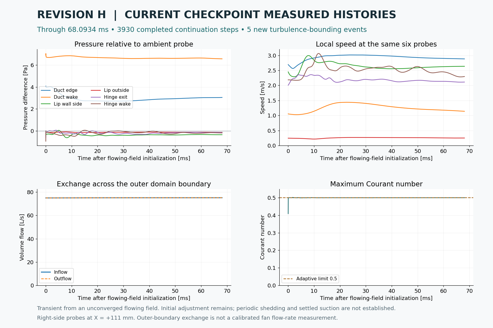

Air is already moving in the first frame.
This separate transient begins with the flowing field from steady-solver iteration 400. Its clock starts at zero for this sequence. It is not appended to the original quiet-start simulation.
Simulation paused. The native restart checkpoint is preserved at 69.4402 ms, with previous-step history. These videos use the existing recorded samples. Automatic hourly publication is paused.
Follow the moving air
Latest recorded flow
5× faster playback

Where the front-opening flow goes

Preserved checkpoints
| Checkpoint | Transient time | Actual states | Files |
|---|---|---|---|
| checkpoint-01 | 0.9987 ms | 30 | Video · Provenance · Diagnostics |
| checkpoint-02 | 2.8888 ms | 87 | Video · Provenance · Diagnostics |
| checkpoint-03 | 6.4898 ms | 197 | Video · Provenance · Diagnostics (gzip) |
| checkpoint-04 | 10.5656 ms | 314 | Video · Provenance · Diagnostics (gzip) |
| checkpoint-05 | 14.7441 ms | 435 | Video · Provenance · Diagnostics (gzip) |
| checkpoint-06 | 19.2612 ms | 563 | Video · Provenance · Diagnostics (gzip) |
| checkpoint-07 | 23.5771 ms | 685 | Video · Provenance · Diagnostics (gzip) |
| checkpoint-08 | 28.0572 ms | 812 | Video · Provenance · Diagnostics (gzip) |
| checkpoint-09 | 32.1176 ms | 929 | Video · Provenance · Diagnostics (gzip) |
| checkpoint-10 | 36.7060 ms | 1060 | Video · Provenance · Diagnostics (gzip) |
| checkpoint-11 | 41.1650 ms | 1190 | Video · Provenance · Diagnostics (gzip) |
| checkpoint-12 | 45.6416 ms | 1320 | Video · Provenance · Diagnostics (gzip) |
| checkpoint-13 | 50.1812 ms | 1451 | Video · Provenance · Diagnostics (gzip) |
| checkpoint-14 | 54.7267 ms | 1581 | Video · Provenance · Diagnostics (gzip) |
| checkpoint-15 | 59.2968 ms | 1712 | Video · Provenance · Diagnostics (gzip) |
| checkpoint-16 | 63.7543 ms | 1841 | Video · Provenance · Diagnostics (gzip) |
| checkpoint-17 | 68.0934 ms | 1966 | Video · Provenance · Diagnostics (gzip) |
How this run is initialized
The geometry, mesh and fan forcing match the original Revision H case. Velocity, pressure and turbulence fields are copied from the saved steady iterate; old transient history is not copied at initialization. The backward time scheme uses its native initial Euler fallback. The solver configuration uses 8 CPU workers, 2 outer correction passes, an initial 12.5 µs step, a maximum 25 µs step and an adaptive Courant target of 0.5. The run began with four workers and was checkpointed onto eight after a short field-equivalence and throughput comparison; physical time and native previous-step fields were preserved. Measured CPU scaling and checkpoint checks.
Arrows show sampled in-plane velocity at X = +111 mm. Colour limits are fixed within this sequence: speed 0–6 m/s, pressure ±12 Pa and vorticity ±2000/s. The original startup sequence retains its own scales. Grey areas are solid or unsampled; black lines are CAD surfaces.
Initialization provenance and settings · Mesh limitations · Dated solver status · Short correction-count comparison